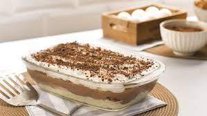

Receita do Pavê de Chocolate

Descrição
O pavê de chocolate é conhecido por ser uma ótima sobremesa
Ingredientes
- 1 pacote de bolacha maisena
- 1/2 copo de leite
- 1 colher (sobremesa) da chocolate em pó
Passos
- Em uma tigela, misture o leite e o chocolate em pó até que esteja completamente dissolvido.
- Molhe as bolachas no leite e reserve.
- Em uma panela, leve todos os ingredientes ao fogo médio e misture até obter uma consistência grossa e cremosa.
- Bata as claras em neve com o açúcar até obter um creme consistente, adicione o creme de leite e misture delicadamente.